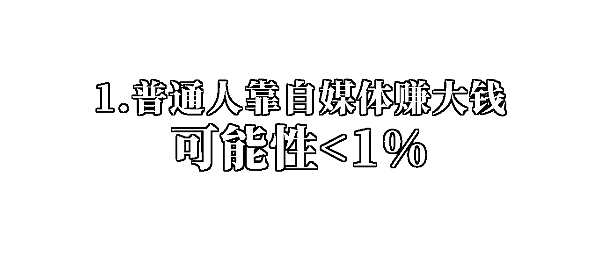
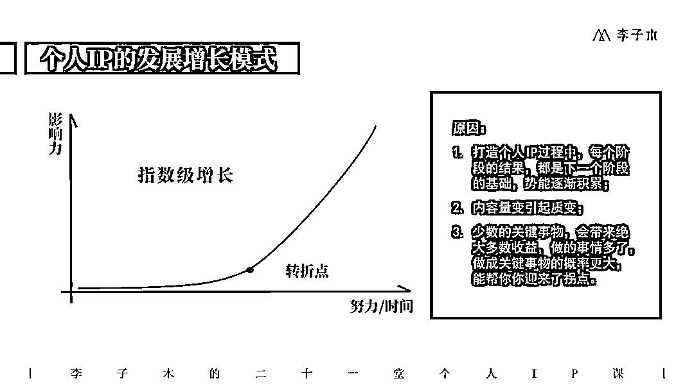
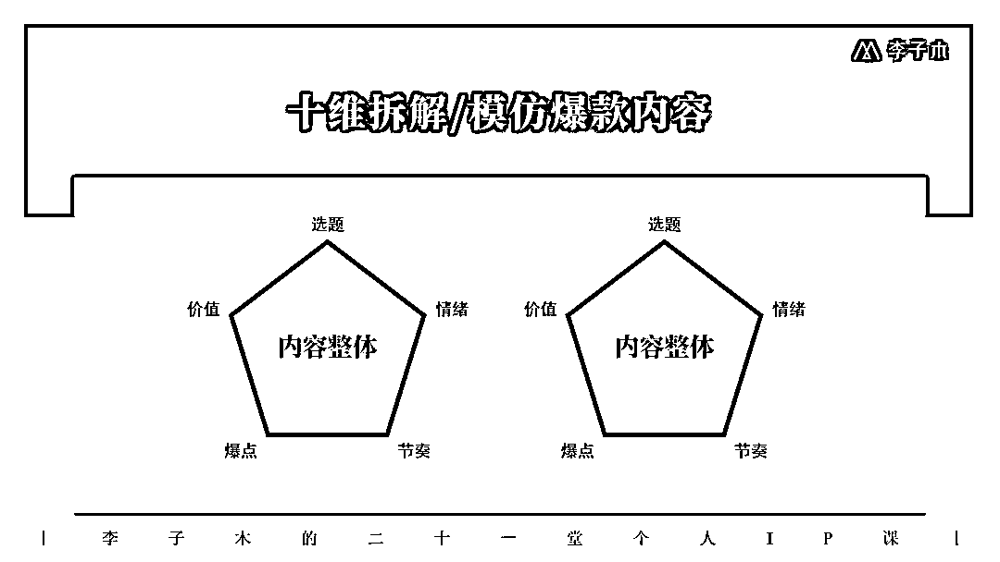

来源：https://m08zlw24sg0.feishu.cn/docx/AloOddLbjoZZy2x81EJcbN9bnGo

你好，我是李子木，一个干了10年品牌营销的广告人，也是一个5年陈的自媒体运营。
我从微博时代开始接触自媒体，陆续做了近5年自媒体运营，做过几个十几万粉不变现的账号、也做过几百粉变现上万的账号，正在冲刺变现6位数。
前段时间，有学员问我：自媒体新人应该从哪里开始学习？
作为一个过来人，我有许多话要说，干脆写成文章，让更多需要的伙伴看到。
首先，我想说
1、靠自媒体赚到几百块、几千块并不难，只要你出过一两个爆款、或者是做得人群比较垂直，就能接到一些小几百元的广告费。但=要通过自媒体实现自由职业、拥有稳定的收入、摆脱乏味的工作，成功率不到1%。你看到的大多数靠自媒体实现财富自由的人，要么是凤毛麟角，要么只是文字自由。
2、没有随便发发就能成功，你一定要付出比工作更多的努力。你看到的“随手一发就火了”，要么是背后有机构或资本氪金，要么是积累了多年的结果，要么真的只是运气爆棚，但这种情况，往往不可持续，所以我们可以看到，很多账号（尤其小红书）出了个万赞爆款之后，就没有了水花。
工作摸鱼，还有老板发保底工资，但是对自媒体偷懒，往往容易颗粒无收。尤其是现在，自媒体上的竞争越来越大，只有比别人更努力、更专业，才能被更多人喜欢。
3、自媒体是放大镜，不是阿拉丁神灯，它会把你的东西放大，但不能无中生有。如果你没有找到变现的立足之地，哪怕一时有不错的数据，最终也做不长久。
如果你看完这3个真相，还想要做自媒体，那么，请你做好
1、建立正确的期待
正确的期待包括2个方面：
1个是付出，你能为自媒体付出多少？如果是职场人，可不可以拿出至少一半以上的业余时间来做自媒体？如果你是创业者，可不可以花最少3个月、一半的经历来研究自媒体，并且在跑通流程后，保持持续的输出？
第2才是回报，有付出的因，才能有回报的果，在开始的半年内，付出大概率会少于回报，可能你日更3个月，才能赚到第一个500块，坚持半年，才能赚到两三千。但走上正轨之后，回报也会慢慢来得更快，直到过了某个临界点，才能迎来你的指数级增长。

前提是，你能坚持到那个拐点。
2、找到适合自己的方式
以始为终，知道你要去哪里、要怎么赚钱，再来做这件事，以免浪费力气、走弯路。
如果你有自己的产品，比如你是服装店老板、餐饮店老板，那就做“主理人”或老板IP，为自己的店铺引流、给自己的产品带货；比如你有情商课、经济学课等只是产品，那就做知识IP，做知识付费；
如果你没有自己的产品，就把自己感兴趣的方向列下来，然后，去一一对应这8种变现方式，看哪一种适合自己：带货、广告、咨询、陪伴、卖课、收费出席活动、出书、做品牌。
请记住：做自媒体，同量级的账号，不同变现方式的变现能力是完全不同的，其中卖自己的产品>带货>接广告。
接下来，我们就可以开始
1、选择一个平台
确定了你的变现方式之后，根据你的目标客户群体、产品单价，选择合适的平台。
目前比较适合新人的平台有3个：
小红书，对新人友好，素人出爆款的比例高，同时小红书本身的种草属性、高质量人群，让账号具有较高的变现能力，关于小红书2024年的趋势，感兴趣的话可以看我之前的分析：
视频号，正在发展期的短视频平台，对新人比较友好，同时坐拥微信的超大流量池，有很大的发展空间；
公众号，曾经非常风光的自媒体平台，因为推送机制一度被唱衰，但现在，公众号正在调整自己的推送机制，也新推出了类似图文笔记的形式等等，有了新的增长曲线，又有了新机会，同样坐拥微信的超大流量池，基础盘不会差，同时具有直接向私域导流的巨大优势，尤其是做知识IP的新人可以好好考虑这个平台。
2、找到参考答案
自媒体是一场开卷考试，同行是最好的老师，拆解是最好的答案。
现在做自媒体的人很多，你想做的事情，大概率有人做过了，所以我们可以去找找：别人做得怎么样？他是怎么做到的？我可以做得比他更好吗？
除此之外，我们也可以去找找，那些没有赚到钱的、失败了的人，是怎么做的？为什么失败了？为什么停更了？
这能帮我们知道这件事成功的可能性、了解一些方法、以及提前知道一些坑。
3、做十个模仿内容
光找到答案还不够，还要去真正拆解、模仿、学习，就像从小学到大学，我们拿的都是同一套教材，但是有人考得好，有人考的不好，不是教材的原因，而是每个人自己学习吸收的不同。
给大家推荐拆解模仿的10个维度，这样拆解10个好的内容，你对自媒体内容的把控力会突飞猛进。

4、学会尊重规则
去了解你选择的主要平台的规则，比如小红书的社区规范、视频号的平台政策等等，了解游戏的规则，能够让你更好地在这个平台做好账号，顺应平台的趋势，也能比靠自己一个人拿到更好的结果。
著名产品人梁宁在她的得到课程《产品思维30讲》里讲过“点、线、面、体”，是讲作为“点”的我们，要学会找到上升的平台、上升的行业，才能让我们事半功倍，放到自媒体运营这件事情上，我们个人是一个点，平台是一个面，我们去顺着平台上升的方向去努力，才能达到1+1>2的效果，这也是我们要去了解平台规则、了解平台趋势的原因。
5、不断复盘调整
做好了前面4步准备，你可以去发布内容、运营自己的自媒体账号了。
这是一个长久、持续的过程，不要用蛮力，而是学会看数据、学会看反馈，不断复盘好的、坏的，进行调整，就像从长沙开车去北京，出发，才有可能到达，但是经过每一个路口，我要学会判断，选择更好走的、更近的路线，才能更快、更平安地到达。
最后，我再给你推荐
1、《运营之光》，三节课创始人黄有璨写的关于运营的书籍，很经典的一本书，虽然对于自媒体运营的部分讲的比较少，没有太多最新案例，但能够让你对于“运营”这件事有大的思路，而思路是做一件事很重要的东西。
2、《影响力》，营销学的经典书籍，社会心理学家罗伯特·B·西奥迪尼通过大量社会调研、对行业人士的走访，梳理出对人们影响力最大的7个武器，是《财富》杂志推荐的75本商业必读书之一，被杨天真称为“2022年最让她兴奋”“遗憾读到得太晚”的书，可以看我对这本书的拆解：mp.weixin.qq.com
3、《定位》，经典中的经典！定位之父特劳特的著作，现在所有人说的定位、垂直细分、细分赛道，都可以从这本书中找到影子。
4、《低风险创业》，樊登老师的著作，关于降低创业风险、关于提高商业效率，对于想要以个人的身份独立赚到钱的自媒体创业者、个人IP打造者，是很不错的认知方面的书籍。
我是李子木，一个正在用自媒体改变自己、也希望用我的知识和经验帮更多人改变现状的运营er。
生活不易，请不要放弃努力。加油。